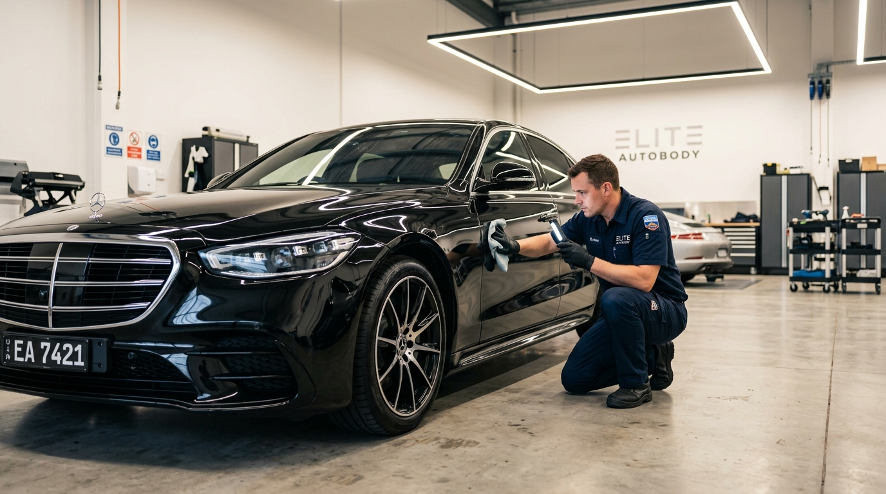
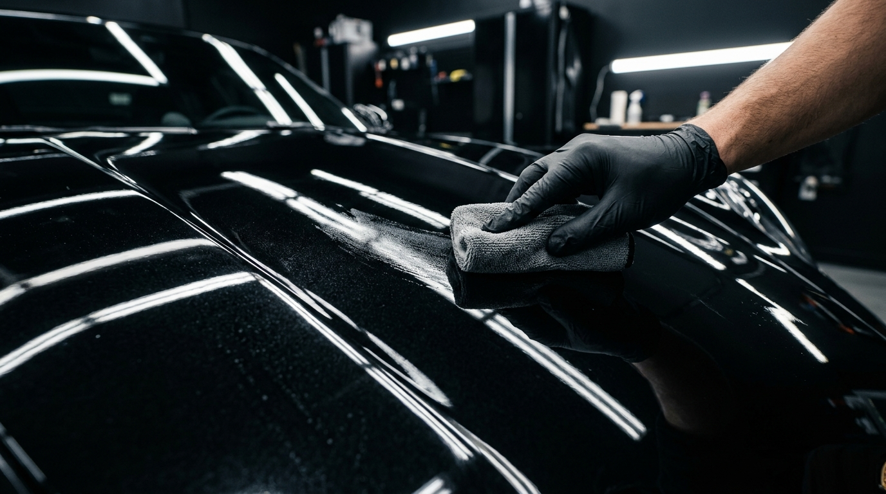
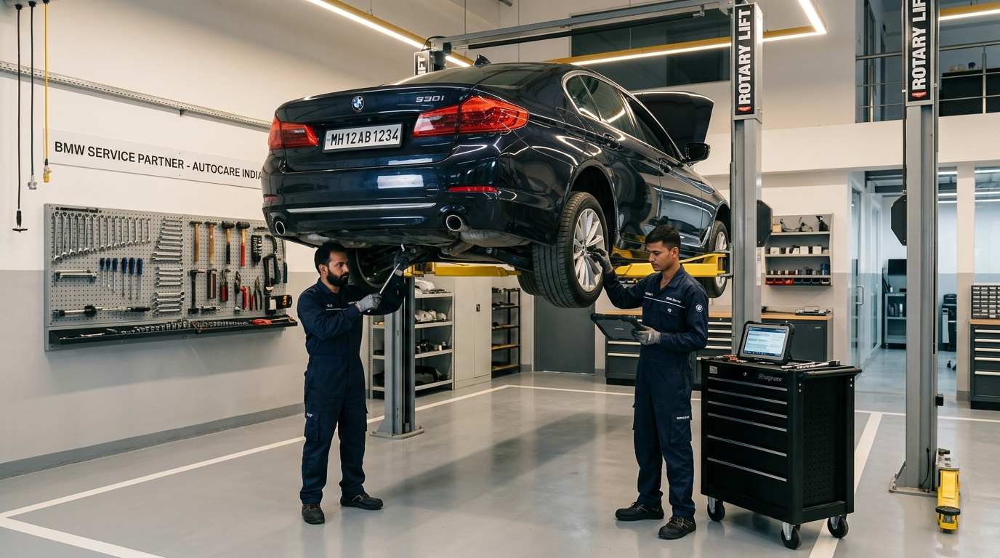

Recent work
Selected transformations.
BMW, Audi, Mercedes-Benz, Rolls-Royce and Porsche. Our portfolio is updated as vehicles complete.

Full Body Restoration
Mercedes · Panel & Respray

Ceramic Stage 3
Graphene Coat

Engine Service
Rolls-Royce V12

Workshop Diagnostics
BMW · Full Service